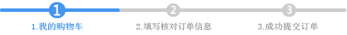

天津站
|
手机版
快速注册
登录
|
我的蓝玺
我的订单
我的收藏
我的积分
|
会员俱乐部
乐迷社区
|
礼品卡
|
邀请返利
生鲜商城
商城网
生鲜生态
|
更多频道
集团内购
更多知识

填写并核对订单信息
使用新地址
关闭
*
收件人
*
所在地区
aaa
请选择
北京
安徽
福建
甘肃
广东
广西
贵州
海南
河北
河南
黑龙江
湖北
湖南
吉林
江苏
江西
辽宁
内蒙古
宁夏
青海
山东
山西
陕西
上海
四川
天津
西藏
新疆
云南
浙江
重庆
香港
澳门
台湾
请选择
请选择
*
街道地址
邮编
*
手机号码
或固定电话
两者至少填一项
收货人信息
2452
244
2441
修改
送货时间
送货时间仅作参考，快递公司会尽量满足您的要求
仅工作日送货
仅周末送货
工作日/周末/假日均可
使用礼品卡支付
提示：燕之祖礼品卡优惠多多。
[了解礼品卡]
礼品卡支付
请输入您的礼品卡密码号：
刮开图层，8位数字密码号
使用绑定的礼品卡
温馨提示：您还没有登录账户，请您先
[登录]
。
支付方式
支付宝/财付通
网上银行
支持地方银行，需开通网银支付功能
快捷支付
支持信用卡付款，无需开通网银支付功能
快捷
快捷
快捷
快捷
快捷
快捷
快捷
快捷
商品清单
商品
数量
重量
单价
小计
库存
精品牛肉
商品编号：YW000109
10
1克
16.80
168.00
有货
应付总额：
￥168.00
在线客服
购物袋
10
最近浏览
近期浏览
红包福利
下载APP
返回顶部
客服电话：4000-519-519
周一至周日9：00-20：00
蓝玺服务
关于我们
公司简介
战略合作
蓝玺基地
媒体报道
新手指南
新用户注册
购物流程
蓝玺优势
会员相关
会员等级
积分政策
会员权益
会员返利
配送服务
配送范围及时限
配送运费
运输包装说明
发票制度
售后服务
退换货流程
退款说明
正品保障
投诉建议
支付方式
货到付款
在线支付
优惠券
礼品卡
关注蓝玺冷链
蓝玺微博
蓝玺微信